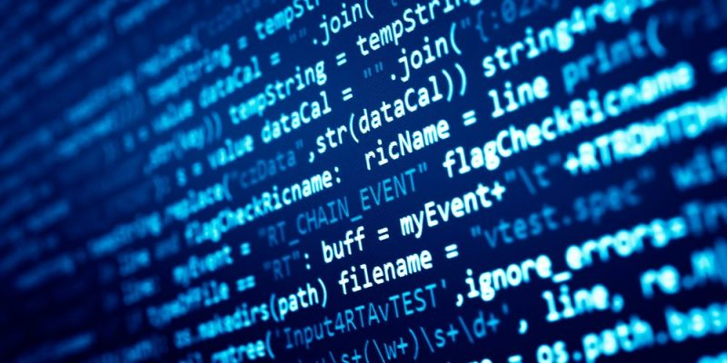
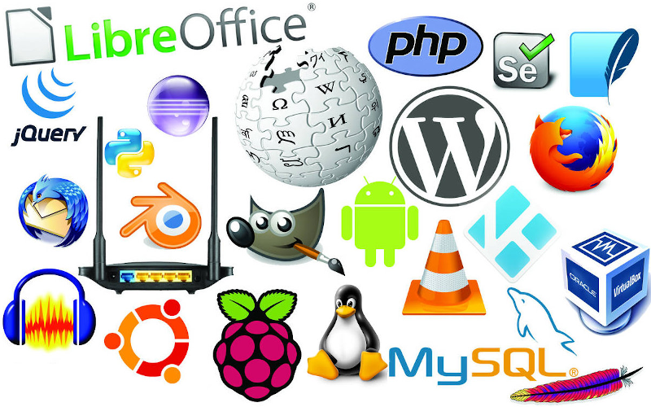

Software

Software es un término informático que hace referencia a un programa o conjunto de programas de cómputo, así como datos, procedimientos y pautas que permiten realizar distintas tareas en un sistema informático.
Software Propietario

Se puede deducir la definición de software propietario como todo aquel software que no es libre. Este término no está totalmente aceptado, usándose otros como privado, privativo o de propiedad. El software de propietario es aquel que tiene limitados los derechos de uso, copia, distribución o modificación. Su código fuente no está disponible, aún cuando esté abierto al usuario. Los derechos de autor pertenecen a una persona o a una empresa.
- Facilidad de adquisición.
- Existencia de programas más específicos para cualquier actividad o tarea.
- Mayor desarrollo de los programas al contar una mayor inversión.
- Mayor compatibilidad con el hardware.
- Más compatibilidad en el terreno de multimedia y juegos.
- Mejor protección de las obras con copyright.
Software Libre

El software libre es todo software cuyo código fuente puede ser estudiado, modificado, y utilizado libremente con cualquier fin y redistribuido con cambios o mejoras sobre ellas. Su definición está asociada al nacimiento del movimiento de software libre, encabezado por el activista y experto informático estadounidense Richard Stallman y la fundación que presidía en 1985, la Free Software Foundation, una organización sin ánimo de lucro que coloca la libertad del usuario informático como propósito ético fundamental.
- Fácil acceso y bajo coste de adquisición, permitiendo ahorrar en el mantenimiento y renovación de tecnologías.
- Favorece la independencia tecnológica del autónomo.
- El usuario no depende del autor del software.
- No es necesario adquirir nuevas licencias al poderse copiar las aplicaciones en tantos equipos como sea necesario.
- Total libertad para usar el programa y adaptarlo a tus gustos y necesidades.